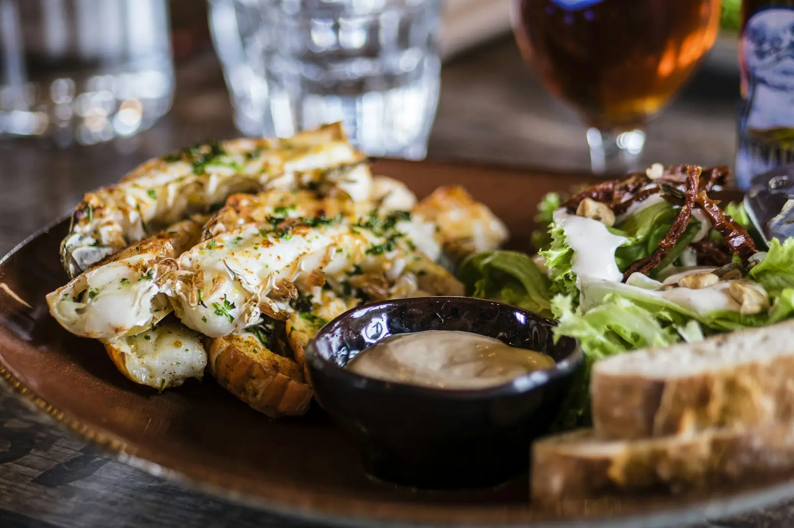
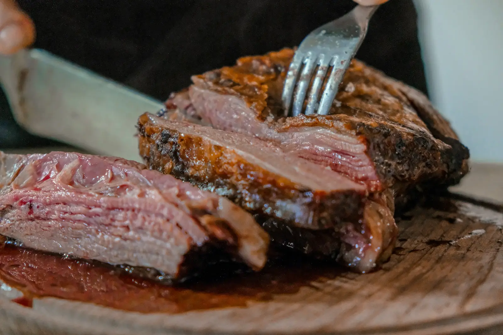

Speisekarte
Speisekarte: Regionale Küche aus der Lüneburger Heide
Norddeutsche Klassiker, saisonale Gerichte und echte Lieblingsgerichte für Kinder. Fast alles kochen wir selbst – von der Brühe bis zur Roten Grütze.
Vorspeisen & Kleinigkeiten
Zum Anfangen – oder zum Teilen mit dem ganzen Tisch.
Heidekartoffelsuppe
7,90 €Cremig, mit gerösteten Speckwürfeln, Schnittlauch und Bauernbrot. Ohne Speck auch vegetarisch.
KlassikerregionalBuchweizen-Blinis mit geräucherter Forelle
12,50 €Forelle aus der Heide, Meerrettich-Schmand, eingelegte Gurke und Dill.
regionalRote-Bete-Carpaccio
10,90 €Mit Ziegenfrischkäse vom Hof, Walnüssen, Heidehonig und Feldsalat.
vegetarischHeidjer Brotzeitbrett
16,90 €Heidschnucken-Salami, Katenschinken, Bergkäse, Griebenschmalz, Gurken und Bauernbrot.
zum TeilenKleiner Marktsalat
6,90 €Blattsalate der Saison, Kerne, Radieschen und Apfel-Senf-Dressing.
vegan
Hauptgerichte
Norddeutsche Klassiker, zeitgemäß gekocht – mit Zeit, Handwerk und guten Zutaten.

Unser Hausgericht
Geschmorte Heidschnuckenkeule
Die Lüneburger Heidschnucke pflegt seit Jahrhunderten die Heidelandschaft – und schmeckt dabei kräftig, fein und ein bisschen nach Wild. Wir schmoren die Keule sieben Stunden mit Wacholder, Rotwein und Wurzelgemüse.
28,50 €
Mehr über die HeidschnuckeGeschmorte Heidschnuckenkeule
28,50 €Sieben Stunden geschmort, Wacholderjus, Speckbohnen und Kartoffelgratin. Unser Hausgericht.
HausgerichtregionalHeidschnucken-Burger
19,90 €Brioche, Bergkäse, Preiselbeer-Zwiebeln, Rauke und Rosmarin-Kartoffelspalten.
regionalKotelett vom Strohschwein
21,90 €Vom Hof aus der Nachbarschaft, mit knusprigen Bratkartoffeln und Gurkensalat.
KlassikerRinderroulade nach Omas Rezept
23,90 €Mit Apfelrotkohl und Kartoffelklößen. Ja, mit ganz viel Soße.
KlassikerLachsforelle in Senfrahm
22,50 €Aus Teichwirtschaft in der Heide, Petersilienkartoffeln und Gurken-Dill-Gemüse.
regionalWildgulasch
24,50 €Aus heimischer Jagd, mit Pilzen, Rotkohl und Spätzle. Von Oktober bis Februar.
saisonalHeidespargel (April bis Juni)
26,90 €Ein Pfund weißer Spargel, neue Kartoffeln, Sauce Hollandaise, wahlweise mit Katenschinken.
saisonalregional
Vegetarisch & Vegan
Kein Beiwerk, sondern Hauptsache.
Graupotto mit Kürbis
17,90 €Perlgraupen wie Risotto gekocht, Ofenkürbis, Bergkäse, geröstete Kerne.
vegetarischOfengemüse-Bowl mit Buchweizen
16,50 €Saisongemüse aus dem Ofen, Buchweizen, Hummus, Kräuter und Leinsamen-Crunch.
veganKäsespätzle
15,90 €Mit Bergkäse, Röstzwiebeln und kleinem Salat. Macht glücklich, wissenschaftlich unbelegt.
vegetarischKinderliebling
Für kleine Heidjer
Für Kinder bis 12 Jahre – gerne auch als halbe Portion von der großen Karte.
Kleines Schnitzel
8,90 €Vom Strohschwein, mit Pommes oder Kartoffelpüree.
KinderlieblingNudeln mit Tomatensoße
6,50 €Mit oder ohne Käse – Hauptsache Nudeln.
vegetarischFischstäbchen, selbst gemacht
7,90 €Aus Forellenfilet, mit Kartoffelpüree und Erbsen.
KinderlieblingBuchweizen-Pfannkuchen
6,90 €Mit Apfelmus und Zimtzucker.
vegetarischSchnuckenfutter
gratisGemüsesticks mit Kräuterdip – für Kinder kostenlos.
vegan
Desserts & Kuchen
Ohne Nachtisch ist kein Essen fertig. Steht so im Familienrat-Protokoll.
Heide-Buchweizentorte
5,90 €Der Klassiker der Region: Buchweizenboden, Preiselbeeren und Sahne.
regionalKlassikerRote Grütze
7,50 €Mit Vanillesoße – oder, für Mutige, mit beidem: Soße und Sahne.
vegetarischHeidehonig-Parfait
8,50 €Mit Heidelbeeren und Haferkrokant.
regionalArme Ritter
7,90 €Vom eigenen Brioche, mit Apfelkompott und Zimt.
vegetarisch
Heide-Frühstück am Sonntag
Sonntags 09:30 bis 12:00 Uhr – Buffet mit regionalen Produkten.
Heide-Frühstück für Erwachsene
24,90 €Brot und Brötchen vom Bäcker, Rührei, Wurst und Käse aus der Region, Heidehonig, Müsli, Obst, Kaffee und Tee satt.
regionalHeide-Frühstück für Kinder
1,00 €Pro Lebensjahr 1 Euro, Kinder unter 3 Jahren frühstücken gratis.
Kinderliebling
Getränke
Eine Auswahl – die ganze Getränkekarte bekommst du am Tisch.
Heide-Hell vom Fass
4,90 €Untergäriges Helles einer Brauerei aus der Region, 0,4 l.
regionalHausgemachte Limonade
4,50 €Holunder-Minze oder Rhabarber, 0,4 l.
veganApfelschorle von der Streuobstwiese
3,90 €Naturtrüber Saft aus der Region, 0,4 l.
regionalWeinbegleitung
5,90 €Ausgewählte Weine von Familienweingütern – glasweise ab
Kaffee & Spezialitäten
2,90 €Bohnen von einer Rösterei aus Lüneburg – ab
Alle Preise in Euro inkl. MwSt. Die Karte wechselt mit den Jahreszeiten. Informationen zu Allergenen und Zusatzstoffen geben wir dir gerne persönlich – sprich uns einfach an. Halbe Portionen für Kinder sind bei fast allen Hauptgerichten möglich.
Gut essen. Zusammen sein.
Appetit bekommen?
Reserviere deinen Tisch – unter der Woche klappt es oft auch spontan. Am Wochenende lohnt sich die Reservierung.